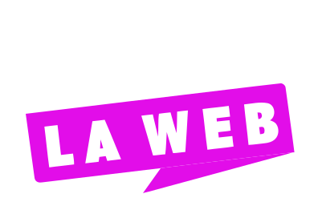

Inicio
Acerca de

Experimetos en Como Vas.es
Palma de Mallorca Alcalde
Socingeniería ética con JS y IA
Palma Info y Sucesos Asombrosos
Comunidad y grupo de Telegram
Dev
Tecnologías que me gustan
@SergioComoVas
Cuenta de tuiter principal
@xxxComoVas
Cuenta de tuiter secundaria
Ayudante Stream
Soporte para nuevos Streamers